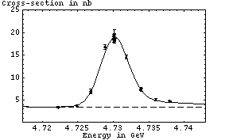
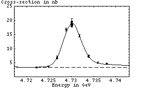

Upsilon Scans: 01/16/02 Online Fit
Fit parameters:
Chi^2 / dof = 12.50 / 14 = 0.8925 |  |
Fit parameters:
Chi^2 / dof = 12.50 / 14 = 0.8925 |  |
Otherwise, the runs used in this fit are exactly those hilighted in the run info list.
(Parameters are ordered: area, mean, sigma, background)
This doesn't have continuum data yet. Continuum data for the Y(1s) will be particularly interesting because it is guaranteed not to have any contribution from high-energy tails from lower-energy peaks.
run<tab>energy<tab>xc<tab>xc_err ----------------------------------- 123164 4.72684 6.68 0.33 123165 4.72685 6.95 0.49 123166 4.73797 4.75 0.17 123167 4.72489 3.77 0.15 123168 4.73185 14.6 0.44 123169 4.72224 3.4 0.14 123170 4.73389 7.5 0.33 123172 4.73392 7.35 0.34 123175 4.73599 5.08 0.2 123178 4.72884 16.77 0.56 123180 4.73006 18.62 0.69 123193 4.73013 18.33 0.61 123196 4.73014 19.15 0.62 123197 4.73019 18.32 0.58 123198 4.73017 19.01 0.63 123200 4.7302 18.69 1.06 123201 4.73017 18.69 0.57 123202 4.73012 19.67 1.
 2.3 MeV nb
2.3 MeV nb